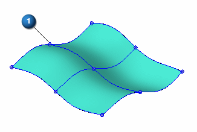
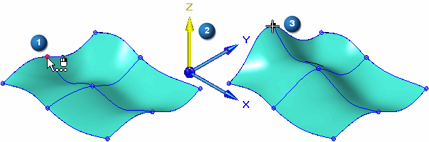
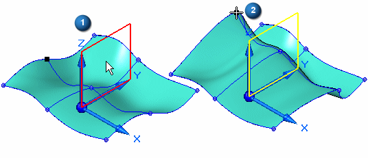
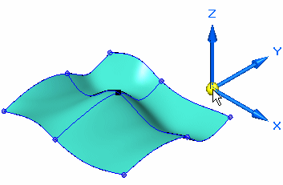
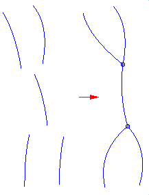

BlueDot command (ordered modeling)
BlueDots are only available in the ordered modeling environment
A BlueDot is a control point where two curves or analytics connect, or where one curve and one analytic connect, thereby providing a control point between the curves. It is a point which can edited to suit design or styling needs.
Use the BlueDot command (ordered modeling)  to create a control point (1) between two sketch elements. You can connect the elements
at their keypoints or at a point along the elements. The BlueDot overrides any existing
associativity of the elements. This allows you to edit the location of the BlueDot
or the elements it connects without regard to the order in which the elements were
constructed.
to create a control point (1) between two sketch elements. You can connect the elements
at their keypoints or at a point along the elements. The BlueDot overrides any existing
associativity of the elements. This allows you to edit the location of the BlueDot
or the elements it connects without regard to the order in which the elements were
constructed.

After you connect the keypoints of two elements with a BlueDot, you can edit the position of the BlueDot to change the shape of the elements. Surfaces that were constructed using the elements also update.
Refer to Connect sketch elements with a BlueDot for more info on BlueDot creation.
Edit a BlueDot
To edit the position of a BlueDot, use the Select Tool to select a BlueDot (1), then click the Dynamic Edit button on the Select command bar. When you edit the position of a BlueDot, you can use the OrientXpres tool (2) to restrict the movement to be parallel to a particular axis or plane. You can then drag the BlueDot to a new position (3). The wireframe elements and the surface also update.

When you use OrientXpres to restrict movement to a plane (1), you can move the BlueDot along two axes simultaneously (2).

You can also reposition the OrientXpres tool by selecting the origin of the X, Y, and Z axes, and then dragging OrientXpres to a new position.

You can use the BlueDot Edit command bar to specify whether the edit value is relative to its current position or its absolute position with respect to the global origin of the document. The global origin is the point where the three default reference planes intersect (the exact center of the design space).
When you apply a BlueDot to b-spline curves, you can also control how the curves react to the edit by setting options on the Curve 1 and Curve 2 controls on the command bar.
When you use a BlueDot to connect two elements, it affects the associative relationship of the reference planes on which the elements lie. For example, if one of the elements lies on a reference plane that was created parallel to another reference plane, the dimensional offset value for the reference plane is deleted. When you edit the position of the BlueDot, the reference plane can be moved to a new position to facilitate the repositioning of the elements.
Refer to BlueDot Edit command bar for more information.
BlueDots in Harness Design
When working in Harness Design blue dots are used to connect two wire paths together to create a composite chain. You can also connect other paths to the same bluedot location but will only have one bluedot at that location.

When editing a BlueDot in Harness Design, the Curve 1 and Curve 2 options are not displayed on the BlueDot Edit command bar since you can connect more than two curves.
How do I
Insert sketches into a BlueSurfAdding cross sections into a BlueSurf (ordered modeling)
Construct a BlueSurf feature
Connect sketch elements with a BlueDot
Learn more
BlueSurf overviewEnd Conditions
Cross sections
Look up more details
BlueSurf commandBlueSurf command bar
BlueSurf Options dialog box
BlueDot Edit command bar (ordered modeling)
Hide All BlueDots command (ordered modeling environment)